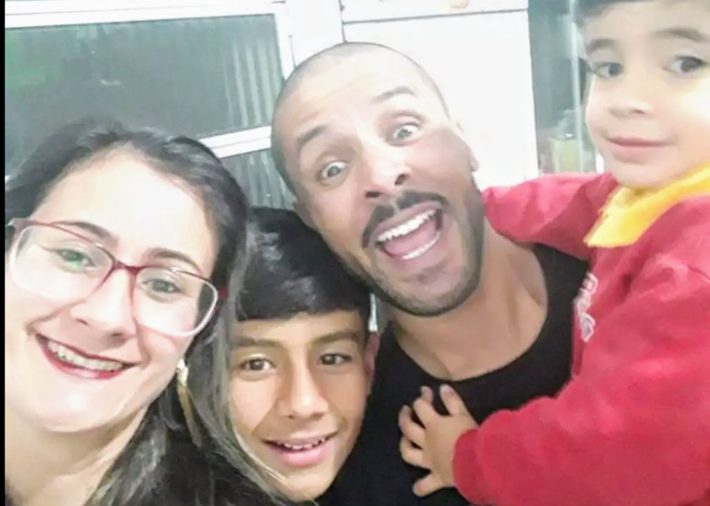

Para minha mãe, cuja companhia é maior poesia que a vida tem a oferecer!
Clique no botão para ver uma frase!
Mostrar Frase
Em cada sorriso, uma história; em cada abraço, um lar. Família, nosso maior presente.
